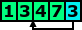
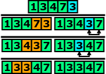
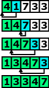

Porządkowanie przez wstawianie

W tej lekcji zajmiemy się algorytmem porządkowania przez wstawianie.
Jednak zanim przejdziemy do wyjaśnienia tego algorytmu, najpierw zajmiemy się
samą operacją wstawiania. Rozważmy taką sytuację jak na obrazku.
Mamy pięcioelementową tablicę, w której pierwsze cztery elementy są
uporządkowane, a na ostatniej pozycji umieściliśmy nowy element. Niestety nowy
element zaburza uporządkowanie tablicy, a oczywiście chcielibyśmy przywrócić
porządek w całej tablicy. Wobec tego nowy element należy umieścić (wstawić)
na odpowiednią pozycję, w przypadku naszej tabeli powinniśmy wstawić trójkę
pomiędzy trójkę oraz czwórkę.

W poprzednim akapicie powiedzieliśmy sobie, że aby ponownie otrzymać uporządkowaną
tablicę należy wstawić nowy element w odpowiednie miejsce. Zastanówmy się jak może
wyglądać algorytm, który to wykonuje. Operacje wstawiania można przeprowadzić w ten sposób,
iż nowy element będziemy porównywać z kolejnymi elementami stojącymi po jego lewej stronie
(na rysunku porównanie liczb oznaczyliśmy kolorem pomarańczowym). Jeśli element stojący
po lewej stronie jest większy od nowego elementu, to należy zamienić go z nowym elementem
i kontynuować wstawianie. Jeśli jednak element stojący po lewej stronie jest
mniejszy lub równy, to znaczy, że nowy element znajduje na właściwym miejscu
i należy zakończyć wstawianie. Wstawianie należy zakończyć również, gdy nowy
element znajdzie się początku tablicy.

Jeśli opanowaliśmy algorytm wstawiania nowego elementu do uporządkowanej tablicy,
to nie powinniśmy mieć już żadnych problemów z wykorzystaniem tej metody w algorytmie porządkowania.
Algorytm porządkowanie przez wstawianie jest następujący. Najpierw należy zacząć
od fragmentu tablicy składającej się z jednego (pierwszego) elementu i wstawić
do niej element drugi. W ten sposób pierwsze dwa elementy będą uporządkowane
i będziemy mogli wstawić trzeci element. Następnie należy umieszczać kolejne elementy.
Po każdym umieszczeniu początek tablicy będzie uporządkowany i będzie można przeprowadzić
kolejną operację wstawiania. Algorytm należy zakończyć jeśli nie będzie żadnego elementu do wstawienia.
Spróbuj zrealizować wyżej opisany algorytm. Zaimplementuj funkcję „void uporzadkuj(n)”,
która powinna porządkować elementy tablicy wyświetlonej w osobnym oknie.
Aby funkcja działała prawidłowo należy skorzystać z dwóch funkcji specjalnych
„int porownaj(idx1, idx2)” oraz „void zamien(idx1, idx2)”. Obie funkcje są szczegółowo
omówione w zakładce „funkcje specjalne”.
W przypadku pojawienia się problemów z implementacją tej funkcji, powinieneś spojrzeć
na pseudokod algorytmu. Po zakończeniu implementowania porównaj swoje rozwiązania
z rozwiązaniem wzorcowym, a następnie przeczytaj podsumowanie.